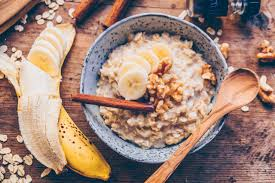

Porridge
Back to Home

Description
A warm and comforting bowl of porridge made with oats, milk, and a touch of honey.
Ingredients
- 1 cup rolled oats
- 2 cups milk (or water)
- 1 tablespoon honey (optional)
- Fresh fruits or nuts for topping (optional)
Steps
- In a saucepan, combine the rolled oats and milk (or water).
- Cook over medium heat, stirring occasionally, until the mixture thickens (about 5-7 minutes).
- Remove from heat and stir in honey (if using).
- Serve warm, topped with fresh fruits or nuts if desired.